receitas práticas para comer bem todos os dias sem abrir mão do prazer à mesa
Bolos, pães, sobremesas, lanches e refeições em versões leves e deliciosas para transformar sua rotina.
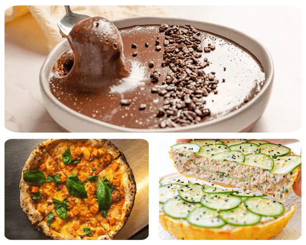
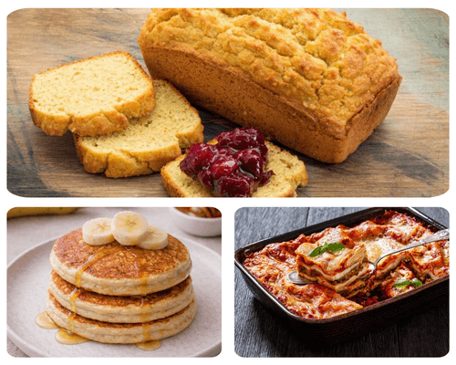
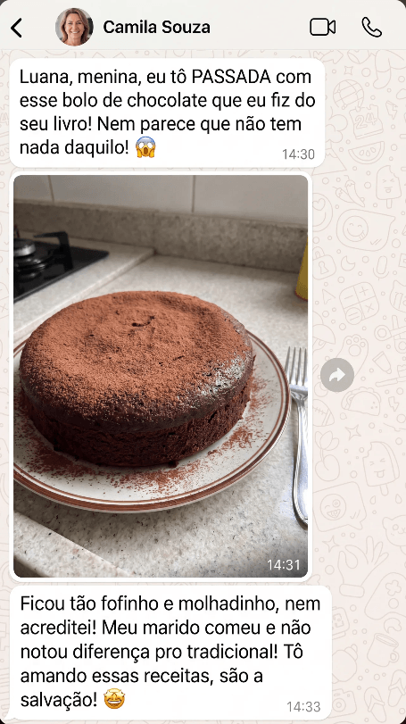
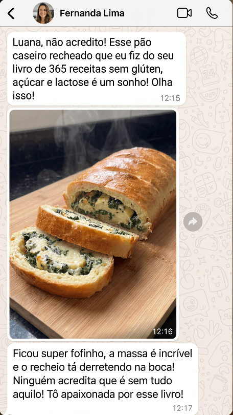
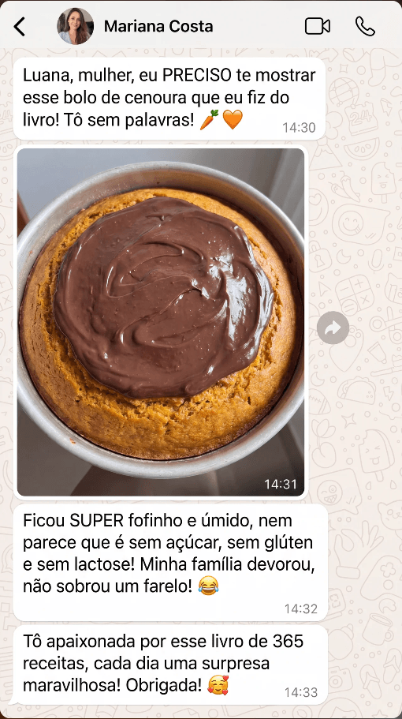
Fofinho, doce na medida e sem açúcar refinado
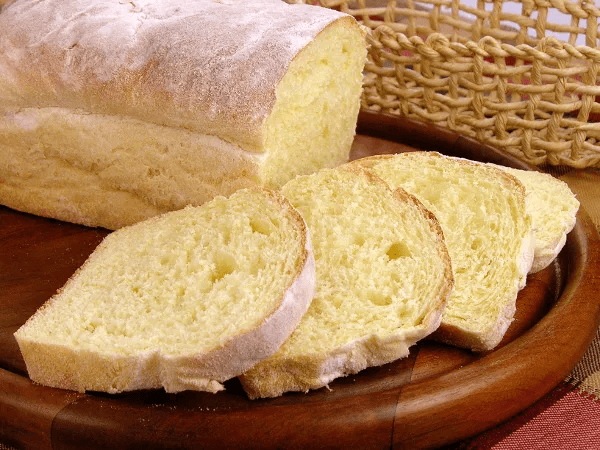
Macio, simples e perfeito para o café da manhã
Rápida, nutritiva e sem lactose
Confortável, saborosa e perfeita para a família
Cremoso, chocolatudo e sem culpa
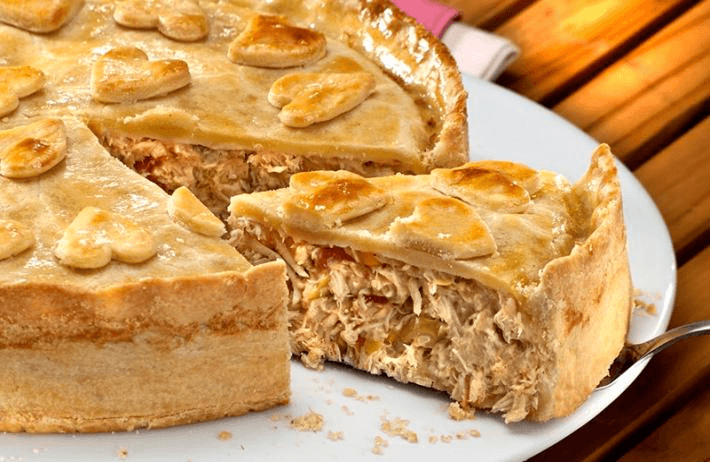
Prática, leve e ótima para qualquer refeição
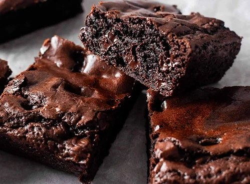
Úmido, intenso e sem farinha de trigo
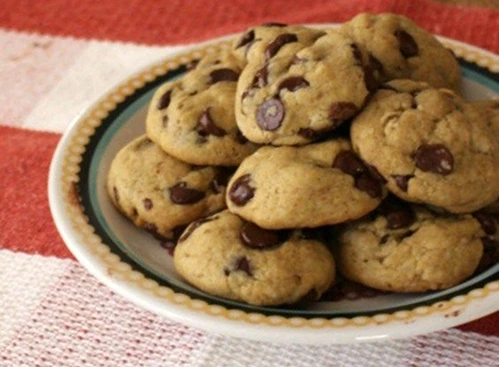
Crocante por fora, macio por dentro
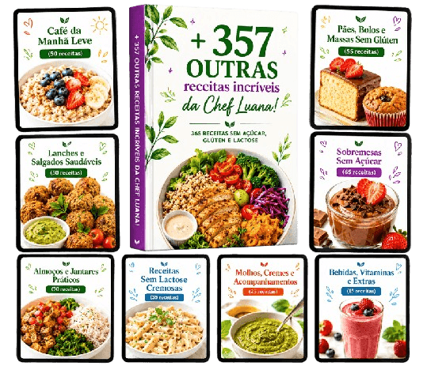
Divididas em categorias completas:
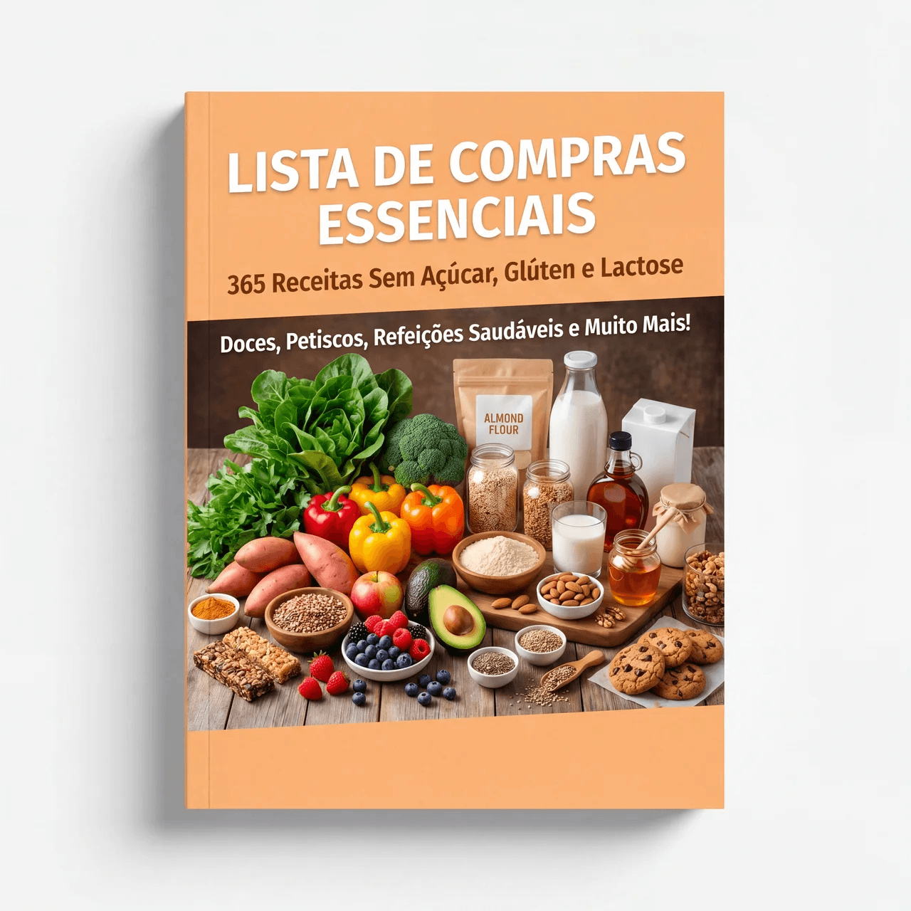
BÔNUS 1Ingredientes certos para montar sua despensa sem erro.
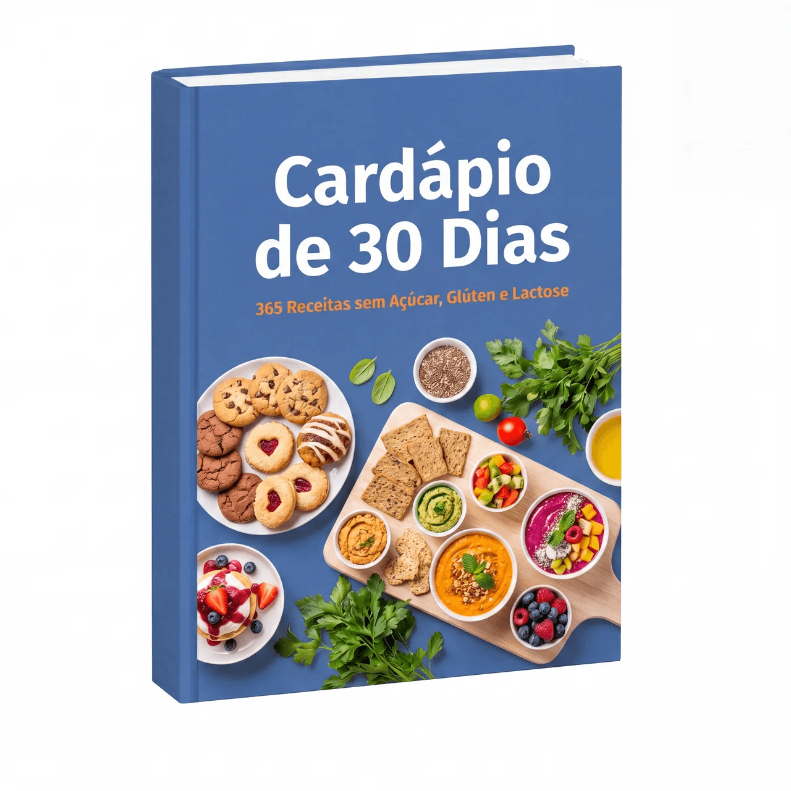
BÔNUS 2Ideias prontas para variar suas refeições o mês inteiro.
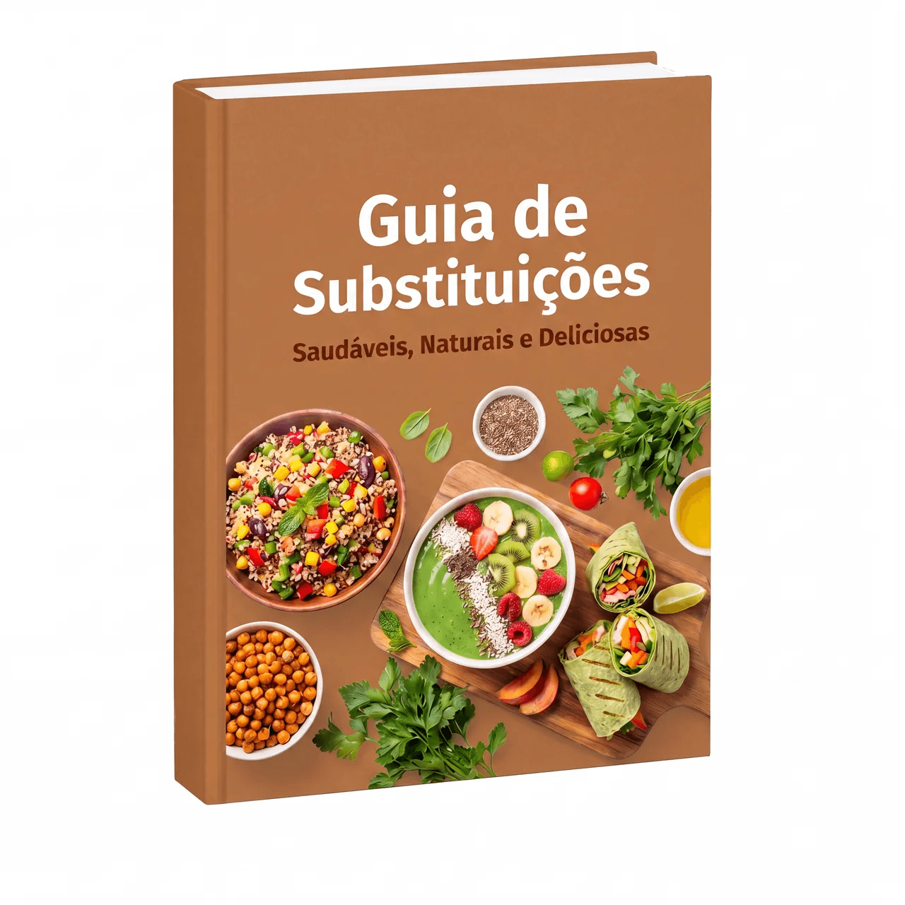
BÔNUS 3Trocas simples para manter sabor, textura e cremosidade.
Oferta especial por tempo limitado · Acesso imediato
Bônus Exclusivos!
📲 Acesso imediato após a compra · Oferta válida até 05/09/2026
Veja o que quem já comprou está falando.
Eu achava que receita sem açúcar ficava sem graça, mas o bolo de cenoura me surpreendeu. Ficou fofinho e todo mundo aqui em casa comeu sem perceber diferença.
Comprei por causa das sobremesas e já fiz brownie, brigadeiro e panqueca. Tudo simples e gostoso. Agora tenho opção quando bate vontade de doce.
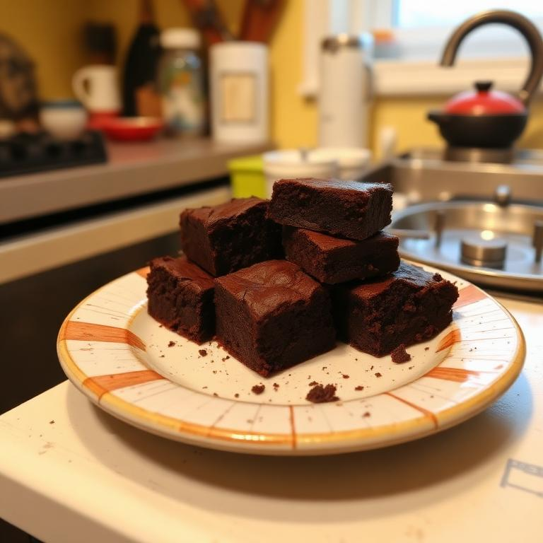
Eu sempre ficava meio pesada depois de comer pão e massa. As versões sem glúten do livro me ajudaram muito a variar o café da manhã e os lanches.
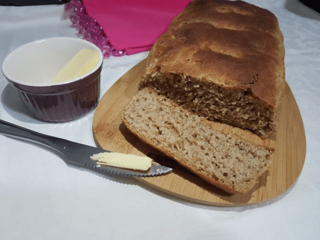
Minha filha tem restrição com lactose e eu vivia sem ideia do que fazer. Agora consigo preparar bolo, torta e até receitas cremosas que ela ama.
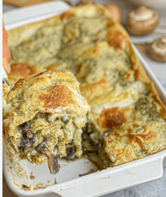
As receitas são bem explicadas e não pedem ingredientes impossíveis. Fiz a torta salgada e virou receita fixa aqui em casa.
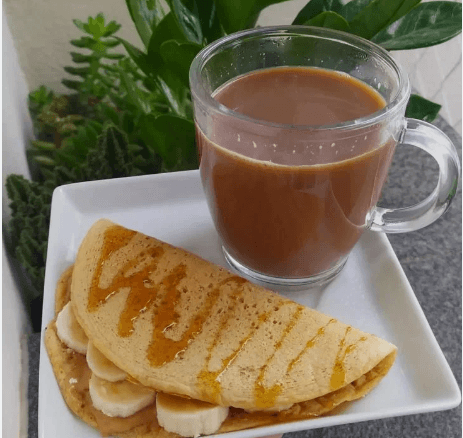
Os cookies sem glúten ficaram perfeitos. Crocantes por fora, macios por dentro. Meu marido nem acreditou que eram sem açúcar refinado.
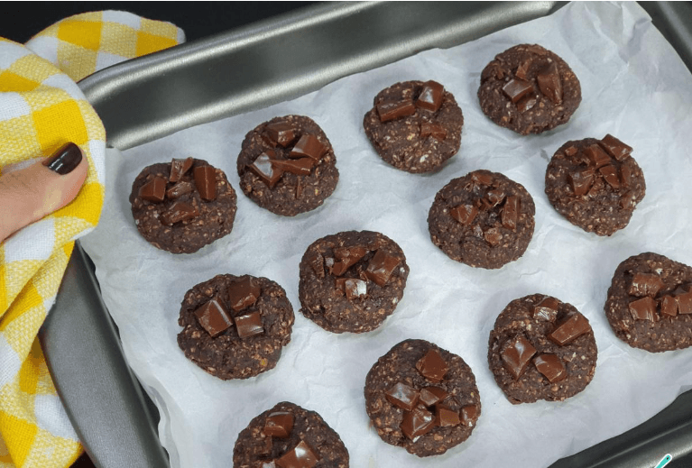
Teste as receitas por 15 dias. Se não ficar 100% satisfeito(a), devolvemos todo o seu dinheiro, sem perguntas.
Quero comprar com segurançaAcesso liberado na hora, do seu jeitinho ✨
Acesse onde estiver
Tela grande pra cozinhar
Seu caderno de receitas
Liberado em segundos
Sim. As receitas foram pensadas para manter sabor, textura e aparência de comida comum, mas em versões sem açúcar, sem glúten e sem lactose. A ideia é comer melhor sem sentir que está em uma dieta sem graça.
São receitas mais leves e equilibradas, feitas para quem quer reduzir açúcar, glúten e lactose no dia a dia. Ainda assim, o foco é praticidade e sabor, com opções para diferentes momentos da rotina.
Não. A maior parte das receitas usa ingredientes acessíveis e fáceis de encontrar em mercados comuns. O objetivo é facilitar sua vida, não complicar.
Sim. As receitas foram criadas para agradar adultos, crianças e pessoas que querem comer de forma mais leve, mesmo sem ter restrições alimentares.
Sim. O material foi feito para a cozinha do dia a dia, com passo a passo direto, ingredientes organizados e preparos fáceis de acompanhar.
Não. Mesmo quem tem pouca prática consegue acompanhar as receitas, porque o conteúdo é simples, didático e pensado para iniciantes.
Após a compra, você recebe o acesso imediatamente no seu e-mail. Pode abrir pelo celular, computador, tablet ou imprimir se preferir.
Você tem 15 dias de garantia incondicional. Se não ficar satisfeito(a), basta solicitar o reembolso dentro do prazo e seu dinheiro será devolvido.
O acesso é vitalício. Você compra uma vez e pode consultar as receitas sempre que quiser.